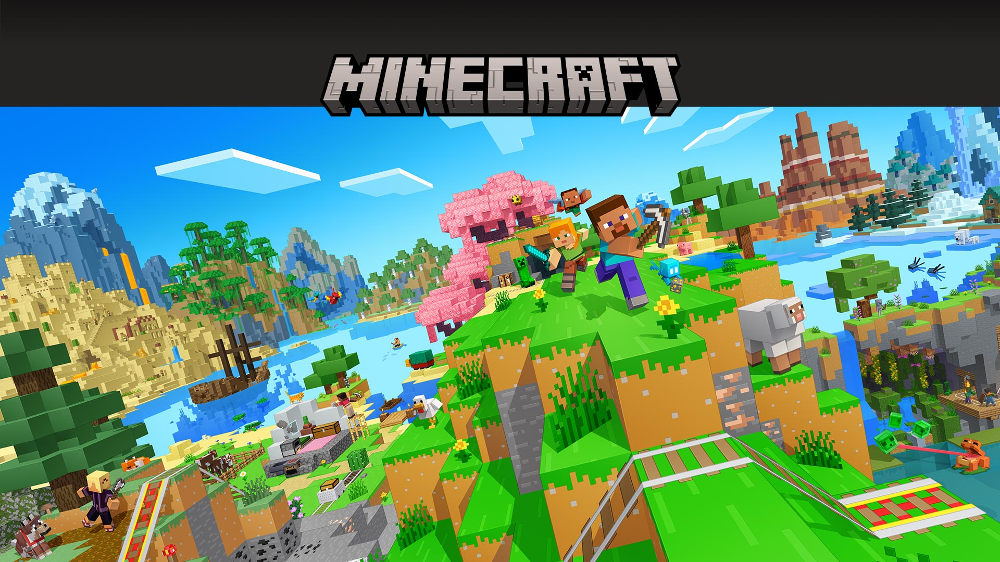
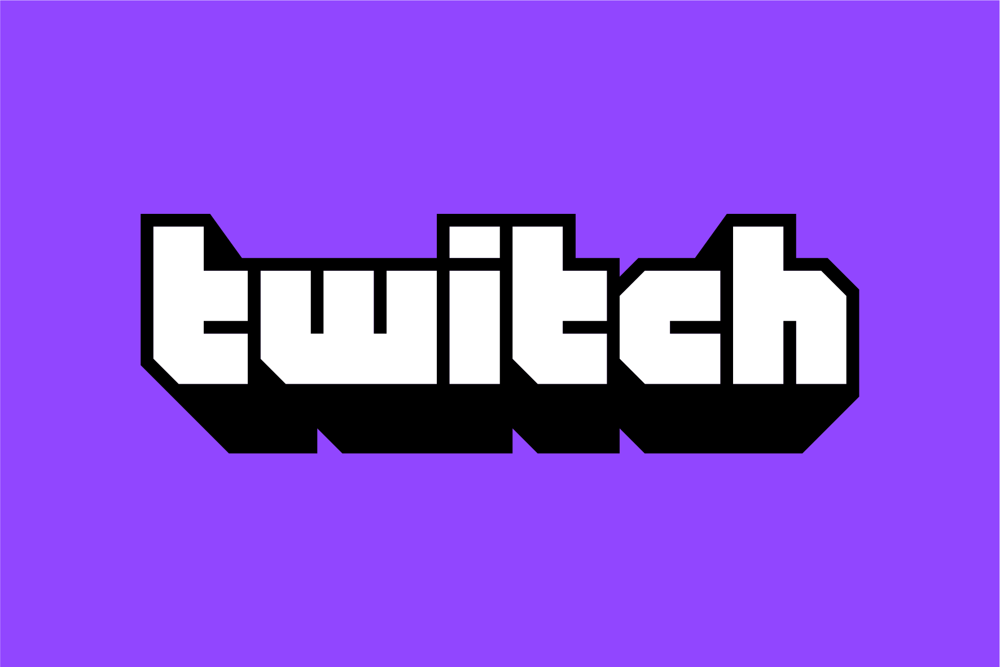

🌸 Cherry Grove
Un hermoso bioma lleno de árboles de cerezo y pétalos rosados.
Exploración, construcción y aventuras
Minecraft es un videojuego de construcción, exploración y supervivencia donde cada mundo puede convertirse en una aventura diferente.

Un hermoso bioma lleno de árboles de cerezo y pétalos rosados.
Un enorme bosque de abetos perfecto para construir una casa de supervivencia.
Un lugar donde podemos encontrar aldeas, templos y muchos secretos.
Algunos de los mobs que podemos encontrar durante una partida son:
Estos son algunos de mis objetivos cuando comienzo un nuevo mundo:
Me gusta jugar Minecraft en streams en Twitch. Me llamo @ratiwiz.
